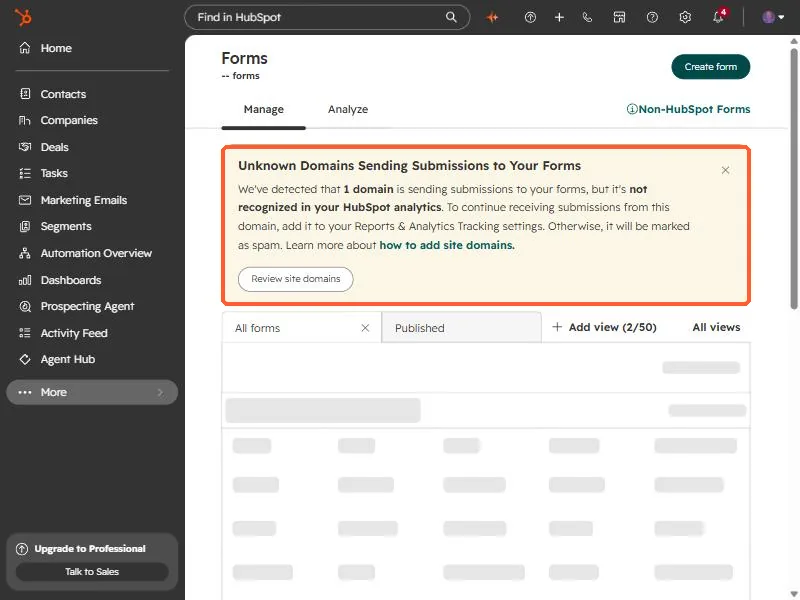
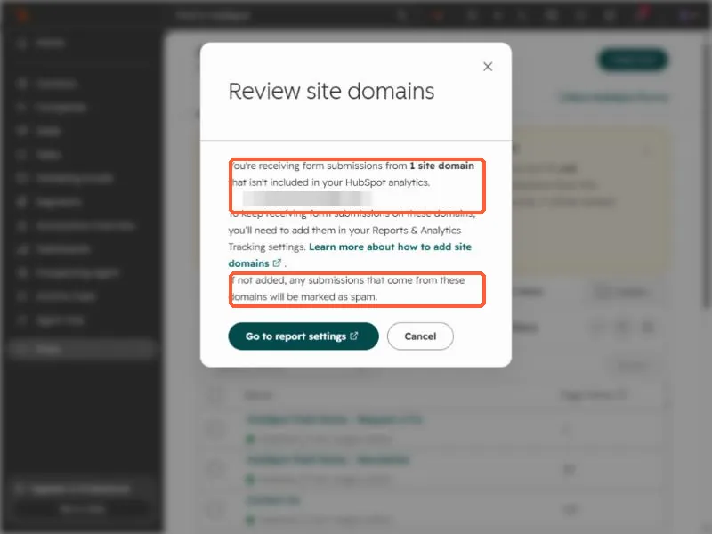
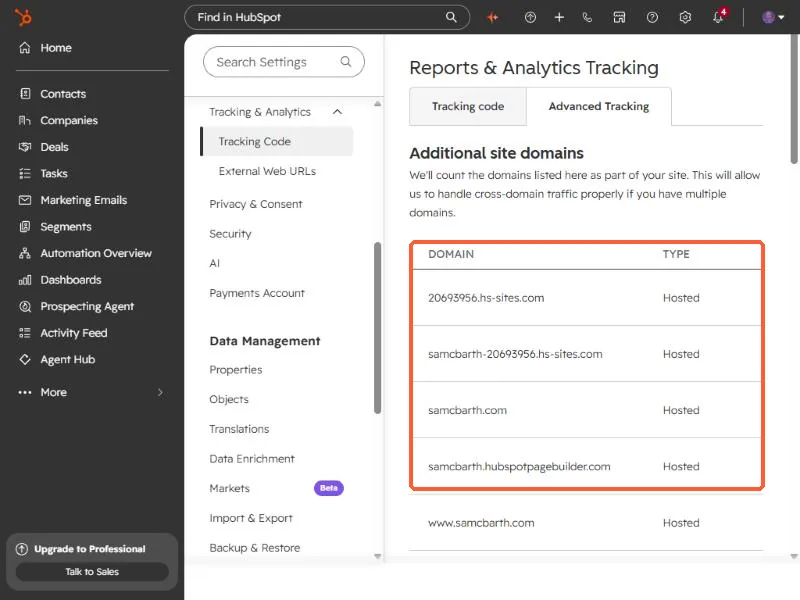

Short answer
When a form is embedded on a site HubSpot does not recognize, the submissions are flagged with the spam type Unregistered site domain. HubSpot warns you at the top of the Forms page with a banner that names the domain. Add the domain under Tracking & Analytics, Advanced Tracking, Additional site domains, then release any real submissions from the form's spam list with Release to submissions.
1. Look for the banner
Open Forms. If a site you have not registered is sending submissions, HubSpot puts a warning above the list. The one in my own account said that one domain was sending submissions that were not recognized in my analytics, and that without a fix the submissions would be marked as spam.


2. See which domain it is
Click Review site domains. The dialog lists each site that is sending submissions HubSpot does not recognize. The domain here is blurred. Cancel closes it without changing anything, or Go to report settings takes you to the fix.


3. Register the domain
Open Tracking & Analytics settings, click the Advanced Tracking tab, and add the domain under Additional site domains. HubSpot counts the domains listed there as part of your site. My own list holds my HubSpot-hosted domains and my custom domain.


Subdomains are a separate case. Check each hostname that hosts a form.
4. Release what was already flagged
Registering the domain fixes new submissions. Anything already caught stays in the spam list until you release it. HubSpot's steps: on the Forms page, click the number in the Spam Submissions column, review the spam type for each row, select the real ones, and click Release to submissions.
Unregistered site domain is one of several. HubSpot also flags a URL or HTML in a name field, a blocklisted email, a malicious script, gibberish text on Professional and Enterprise, a failed reCAPTCHA, and an Excluded source, which happens when the submission comes from an IP you excluded. See exclude your own traffic for that last one.